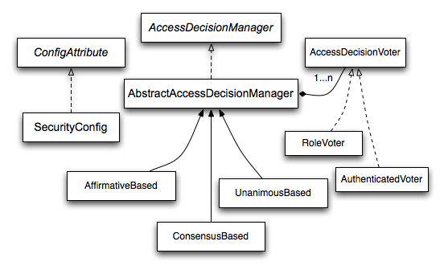
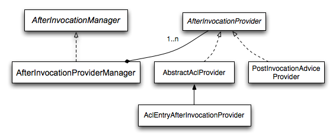

|
For the latest stable version, please use Documentation 6.0.2! |
Authorization Architecture
Authorities
Authentication, discusses how all Authentication implementations store a list of GrantedAuthority objects.
These represent the authorities that have been granted to the principal.
The GrantedAuthority objects are inserted into the Authentication object by the AuthenticationManager and are later read by either the AuthorizationManager when making authorization decisions.
GrantedAuthority is an interface with only one method:
String getAuthority();This method allows AuthorizationManagers to obtain a precise String representation of the GrantedAuthority.
By returning a representation as a String, a GrantedAuthority can be easily "read" by most AuthorizationManagers and AccessDecisionManagers.
If a GrantedAuthority cannot be precisely represented as a String, the GrantedAuthority is considered "complex" and getAuthority() must return null.
An example of a "complex" GrantedAuthority would be an implementation that stores a list of operations and authority thresholds that apply to different customer account numbers.
Representing this complex GrantedAuthority as a String would be quite difficult, and as a result the getAuthority() method should return null.
This will indicate to any AuthorizationManager that it will need to specifically support the GrantedAuthority implementation in order to understand its contents.
Spring Security includes one concrete GrantedAuthority implementation, SimpleGrantedAuthority.
This allows any user-specified String to be converted into a GrantedAuthority.
All AuthenticationProviders included with the security architecture use SimpleGrantedAuthority to populate the Authentication object.
Pre-Invocation Handling
Spring Security provides interceptors which control access to secure objects such as method invocations or web requests.
A pre-invocation decision on whether the invocation is allowed to proceed is made by the AccessDecisionManager.
The AuthorizationManager
AuthorizationManager supersedes both AccessDecisionManager and AccessDecisionVoter.
Applications that customize an AccessDecisionManager or AccessDecisionVoter are encouraged to change to using AuthorizationManager.
AuthorizationManagers are called by the AuthorizationFilter and are responsible for making final access control decisions.
The AuthorizationManager interface contains two methods:
AuthorizationDecision check(Supplier<Authentication> authentication, Object secureObject);
default AuthorizationDecision verify(Supplier<Authentication> authentication, Object secureObject)
throws AccessDeniedException {
// ...
}The AuthorizationManager's check method is passed all the relevant information it needs in order to make an authorization decision.
In particular, passing the secure Object enables those arguments contained in the actual secure object invocation to be inspected.
For example, let’s assume the secure object was a MethodInvocation.
It would be easy to query the MethodInvocation for any Customer argument, and then implement some sort of security logic in the AuthorizationManager to ensure the principal is permitted to operate on that customer.
Implementations are expected to return a positive AuthorizationDecision if access is granted, negative AuthorizationDecision if access is denied, and a null AuthorizationDecision when abstaining from making a decision.
verify calls check and subsequently throws an AccessDeniedException in the case of a negative AuthorizationDecision.
Delegate-based AuthorizationManager Implementations
Whilst users can implement their own AuthorizationManager to control all aspects of authorization, Spring Security ships with a delegating AuthorizationManager that can collaborate with individual AuthorizationManagers.
RequestMatcherDelegatingAuthorizationManager will match the request with the most appropriate delegate AuthorizationManager.
For method security, you can use AuthorizationManagerBeforeMethodInterceptor and AuthorizationManagerAfterMethodInterceptor.
Authorization Manager Implementations illustrates the relevant classes.
Using this approach, a composition of AuthorizationManager implementations can be polled on an authorization decision.
AuthorityAuthorizationManager
The most common AuthorizationManager provided with Spring Security is AuthorityAuthorizationManager.
It is configured with a given set of authorities to look for on the current Authentication.
It will return positive AuthorizationDecision should the Authentication contain any of the configured authorities.
It will return a negative AuthorizationDecision otherwise.
AuthenticatedAuthorizationManager
Another manager is the AuthenticatedAuthorizationManager.
It can be used to differentiate between anonymous, fully-authenticated and remember-me authenticated users.
Many sites allow certain limited access under remember-me authentication, but require a user to confirm their identity by logging in for full access.
Custom Authorization Managers
Obviously, you can also implement a custom AuthorizationManager and you can put just about any access-control logic you want in it.
It might be specific to your application (business-logic related) or it might implement some security administration logic.
For example, you can create an implementation that can query Open Policy Agent or your own authorization database.
You’ll find a blog article on the Spring web site which describes how to use the legacy AccessDecisionVoter to deny access in real-time to users whose accounts have been suspended.
You can achieve the same outcome by implementing AuthorizationManager instead.
|
Adapting AccessDecisionManager and AccessDecisionVoters
Previous to AuthorizationManager, Spring Security published AccessDecisionManager and AccessDecisionVoter.
In some cases, like migrating an older application, it may be desirable to introduce an AuthorizationManager that invokes an AccessDecisionManager or AccessDecisionVoter.
To call an existing AccessDecisionManager, you can do:
-
Java
@Component
public class AccessDecisionManagerAuthorizationManagerAdapter implements AuthorizationManager {
private final AccessDecisionManager accessDecisionManager;
private final SecurityMetadataSource securityMetadataSource;
@Override
public AuthorizationDecision check(Supplier<Authentication> authentication, Object object) {
try {
Collection<ConfigAttributes> attributes = this.securityMetadataSource.getAttributes(object);
this.accessDecisionManager.decide(authentication.get(), object, attributes);
return new AuthorizationDecision(true);
} catch (AccessDeniedException ex) {
return new AuthorizationDecision(false);
}
}
@Override
public void verify(Supplier<Authentication> authentication, Object object) {
Collection<ConfigAttributes> attributes = this.securityMetadataSource.getAttributes(object);
this.accessDecisionManager.decide(authentication.get(), object, attributes);
}
}And then wire it into your SecurityFilterChain.
Or to only call an AccessDecisionVoter, you can do:
-
Java
@Component
public class AccessDecisionVoterAuthorizationManagerAdapter implements AuthorizationManager {
private final AccessDecisionVoter accessDecisionVoter;
private final SecurityMetadataSource securityMetadataSource;
@Override
public AuthorizationDecision check(Supplier<Authentication> authentication, Object object) {
Collection<ConfigAttributes> attributes = this.securityMetadataSource.getAttributes(object);
int decision = this.accessDecisionVoter.vote(authentication.get(), object, attributes);
switch (decision) {
case ACCESS_GRANTED:
return new AuthorizationDecision(true);
case ACCESS_DENIED:
return new AuthorizationDecision(false);
}
return null;
}
}And then wire it into your SecurityFilterChain.
Hierarchical Roles
It is a common requirement that a particular role in an application should automatically "include" other roles. For example, in an application which has the concept of an "admin" and a "user" role, you may want an admin to be able to do everything a normal user can. To achieve this, you can either make sure that all admin users are also assigned the "user" role. Alternatively, you can modify every access constraint which requires the "user" role to also include the "admin" role. This can get quite complicated if you have a lot of different roles in your application.
The use of a role-hierarchy allows you to configure which roles (or authorities) should include others.
An extended version of Spring Security’s RoleVoter, RoleHierarchyVoter, is configured with a RoleHierarchy, from which it obtains all the "reachable authorities" which the user is assigned.
A typical configuration might look like this:
-
Java
-
Xml
@Bean
AccessDecisionVoter hierarchyVoter() {
RoleHierarchy hierarchy = new RoleHierarchyImpl();
hierarchy.setHierarchy("ROLE_ADMIN > ROLE_STAFF\n" +
"ROLE_STAFF > ROLE_USER\n" +
"ROLE_USER > ROLE_GUEST");
return new RoleHierarchyVoter(hierarchy);
}<bean id="roleVoter" class="org.springframework.security.access.vote.RoleHierarchyVoter">
<constructor-arg ref="roleHierarchy" />
</bean>
<bean id="roleHierarchy"
class="org.springframework.security.access.hierarchicalroles.RoleHierarchyImpl">
<property name="hierarchy">
<value>
ROLE_ADMIN > ROLE_STAFF
ROLE_STAFF > ROLE_USER
ROLE_USER > ROLE_GUEST
</value>
</property>
</bean>Here we have four roles in a hierarchy ROLE_ADMIN ⇒ ROLE_STAFF ⇒ ROLE_USER ⇒ ROLE_GUEST.
A user who is authenticated with ROLE_ADMIN, will behave as if they have all four roles when security constraints are evaluated against an AuthorizationManager adapted to call the above RoleHierarchyVoter.
The > symbol can be thought of as meaning "includes".
Role hierarchies offer a convenient means of simplifying the access-control configuration data for your application and/or reducing the number of authorities which you need to assign to a user. For more complex requirements you may wish to define a logical mapping between the specific access-rights your application requires and the roles that are assigned to users, translating between the two when loading the user information.
Legacy Authorization Components
| Spring Security contains some legacy components. Since they are not yet removed, documentation is included for historical purposes. Their recommended replacements are above. |
The AccessDecisionManager
The AccessDecisionManager is called by the AbstractSecurityInterceptor and is responsible for making final access control decisions.
The AccessDecisionManager interface contains three methods:
void decide(Authentication authentication, Object secureObject,
Collection<ConfigAttribute> attrs) throws AccessDeniedException;
boolean supports(ConfigAttribute attribute);
boolean supports(Class clazz);The AccessDecisionManager's decide method is passed all the relevant information it needs in order to make an authorization decision.
In particular, passing the secure Object enables those arguments contained in the actual secure object invocation to be inspected.
For example, let’s assume the secure object was a MethodInvocation.
It would be easy to query the MethodInvocation for any Customer argument, and then implement some sort of security logic in the AccessDecisionManager to ensure the principal is permitted to operate on that customer.
Implementations are expected to throw an AccessDeniedException if access is denied.
The supports(ConfigAttribute) method is called by the AbstractSecurityInterceptor at startup time to determine if the AccessDecisionManager can process the passed ConfigAttribute.
The supports(Class) method is called by a security interceptor implementation to ensure the configured AccessDecisionManager supports the type of secure object that the security interceptor will present.
Voting-Based AccessDecisionManager Implementations
Whilst users can implement their own AccessDecisionManager to control all aspects of authorization, Spring Security includes several AccessDecisionManager implementations that are based on voting.
Voting Decision Manager illustrates the relevant classes.

Using this approach, a series of AccessDecisionVoter implementations are polled on an authorization decision.
The AccessDecisionManager then decides whether or not to throw an AccessDeniedException based on its assessment of the votes.
The AccessDecisionVoter interface has three methods:
int vote(Authentication authentication, Object object, Collection<ConfigAttribute> attrs);
boolean supports(ConfigAttribute attribute);
boolean supports(Class clazz);Concrete implementations return an int, with possible values being reflected in the AccessDecisionVoter static fields ACCESS_ABSTAIN, ACCESS_DENIED and ACCESS_GRANTED.
A voting implementation will return ACCESS_ABSTAIN if it has no opinion on an authorization decision.
If it does have an opinion, it must return either ACCESS_DENIED or ACCESS_GRANTED.
There are three concrete AccessDecisionManagers provided with Spring Security that tally the votes.
The ConsensusBased implementation will grant or deny access based on the consensus of non-abstain votes.
Properties are provided to control behavior in the event of an equality of votes or if all votes are abstain.
The AffirmativeBased implementation will grant access if one or more ACCESS_GRANTED votes were received (i.e. a deny vote will be ignored, provided there was at least one grant vote).
Like the ConsensusBased implementation, there is a parameter that controls the behavior if all voters abstain.
The UnanimousBased provider expects unanimous ACCESS_GRANTED votes in order to grant access, ignoring abstains.
It will deny access if there is any ACCESS_DENIED vote.
Like the other implementations, there is a parameter that controls the behaviour if all voters abstain.
It is possible to implement a custom AccessDecisionManager that tallies votes differently.
For example, votes from a particular AccessDecisionVoter might receive additional weighting, whilst a deny vote from a particular voter may have a veto effect.
RoleVoter
The most commonly used AccessDecisionVoter provided with Spring Security is the simple RoleVoter, which treats configuration attributes as simple role names and votes to grant access if the user has been assigned that role.
It will vote if any ConfigAttribute begins with the prefix ROLE_.
It will vote to grant access if there is a GrantedAuthority which returns a String representation (via the getAuthority() method) exactly equal to one or more ConfigAttributes starting with the prefix ROLE_.
If there is no exact match of any ConfigAttribute starting with ROLE_, the RoleVoter will vote to deny access.
If no ConfigAttribute begins with ROLE_, the voter will abstain.
AuthenticatedVoter
Another voter which we’ve implicitly seen is the AuthenticatedVoter, which can be used to differentiate between anonymous, fully-authenticated and remember-me authenticated users.
Many sites allow certain limited access under remember-me authentication, but require a user to confirm their identity by logging in for full access.
When we’ve used the attribute IS_AUTHENTICATED_ANONYMOUSLY to grant anonymous access, this attribute was being processed by the AuthenticatedVoter.
See the Javadoc for this class for more information.
Custom Voters
Obviously, you can also implement a custom AccessDecisionVoter and you can put just about any access-control logic you want in it.
It might be specific to your application (business-logic related) or it might implement some security administration logic.
For example, you’ll find a blog article on the Spring web site which describes how to use a voter to deny access in real-time to users whose accounts have been suspended.

Like many other parts of Spring Security, AfterInvocationManager has a single concrete implementation, AfterInvocationProviderManager, which polls a list of AfterInvocationProviders.
Each AfterInvocationProvider is allowed to modify the return object or throw an AccessDeniedException.
Indeed multiple providers can modify the object, as the result of the previous provider is passed to the next in the list.
Please be aware that if you’re using AfterInvocationManager, you will still need configuration attributes that allow the MethodSecurityInterceptor's AccessDecisionManager to allow an operation.
If you’re using the typical Spring Security included AccessDecisionManager implementations, having no configuration attributes defined for a particular secure method invocation will cause each AccessDecisionVoter to abstain from voting.
In turn, if the AccessDecisionManager property “allowIfAllAbstainDecisions” is false, an AccessDeniedException will be thrown.
You may avoid this potential issue by either (i) setting “allowIfAllAbstainDecisions” to true (although this is generally not recommended) or (ii) simply ensure that there is at least one configuration attribute that an AccessDecisionVoter will vote to grant access for.
This latter (recommended) approach is usually achieved through a ROLE_USER or ROLE_AUTHENTICATED configuration attribute.